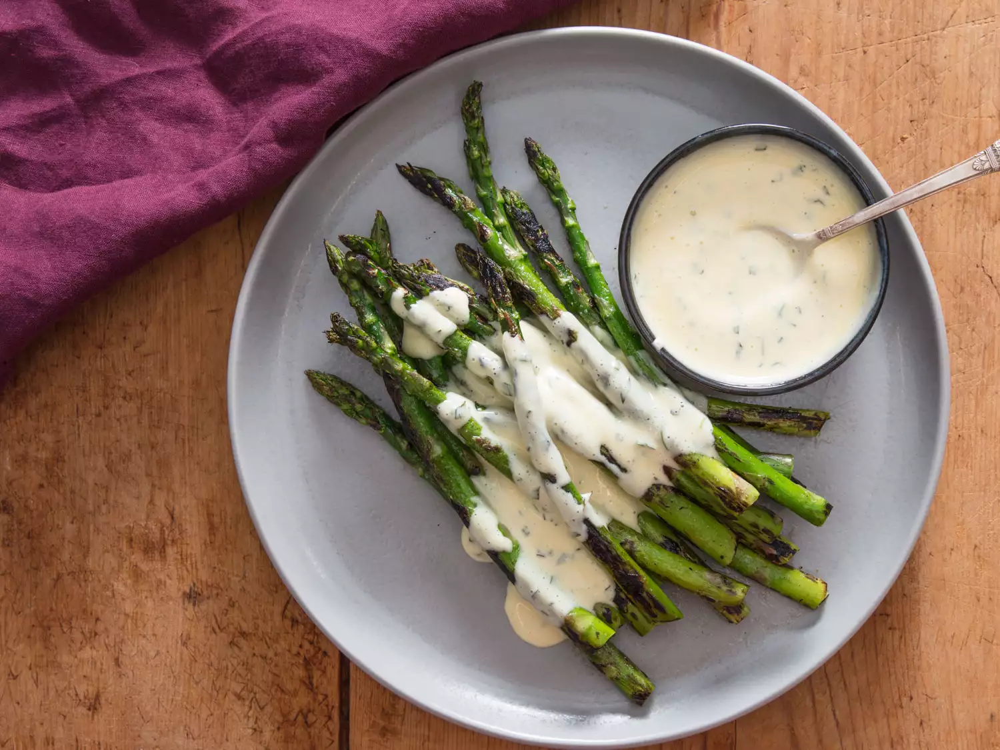

Charred Asparagus With Miso Béarnaise

Description
For an easy steak dinner side dish, char asparagus in the time it takes for your rib-eye to rest. Drizzle them both with a jazzed-up béarnaise that gets an umami boost from white miso. Why drop big bucks at a stuffy steakhouse when you can live large at home? No jacket required.
- 1/2 cup (120ml) dry white wine
- 1/4 cup (60ml) white wine vinegar
- 1 large shallot (30g), sliced thin
- 3 sprigs tarragon, leaves finely minced, stems reserved separately
- 1/2 teaspoon (2g) whole black peppercorns
- 2 large egg yolks (36g)
- 1 tablespoon (20g) white miso
- 12 tablespoons (168g) unsalted butter
- Kosher salt and freshly ground black pepper
- 1 pound (450g) asparagus, woody ends trimmed
- 1 tablespoon (15ml) vegetable oil, divided
Directions
- In a small saucepan, combine wine, vinegar, shallots, tarragon stems, and black peppercorns, and bring to a simmer over medium-high heat. Adjust heat to maintain a gentle simmer and cook until reduced to about 1 1/2 tablespoons of liquid, 10 to 12 minutes. Carefully strain liquid through a fine-mesh strainer into a small bowl, pressing on the solids with the back of a spoon to extract as much liquid as possible. Let mixture cool slightly.
- In a tall-sided cup that barely fits the head of an immersion blender, combine egg yolks, miso, and the wine-vinegar reduction. Using an immersion blender. Blend mixture until well-combined, about 30 seconds.
- Meanwhile, in a small saucepan, melt butter over high heat, swirling constantly, until foaming subsides. Transfer butter to a 1-cup liquid measuring cup. Heat a large cast iron skillet over high heat.
- Place head of immersion blender into the bottom of the cup and turn it on. With the blender constantly running, slowly pour hot butter into cup in a thin and steady stream. Continue blending, raising and lowering blender head slightly to fully emulsify butter with the egg yolk mixture. Sauce should be thick and creamy, able to coat a spoon but still flow off of it. If it is too thick, whisk in a small amount of water to thin it out. Stir in minced tarragon and season to taste with salt. Transfer to a small lidded pot and keep in a warm place for up to 1 hour before serving. Béarnaise cannot be cooled and reheated.
- Add half of the asparagus to the preheated cast iron skillet and arrange in a single layer. Cook, turning occasionally, until spears are lightly charred all over and just cooked through, 4 to 6 minutes for thin spears, 5 to 8 minutes for thick spears. Carefully add half of the vegetable oil to the skillet, toss to coat asparagus with oil, and season with salt and pepper to taste. Transfer asparagus to a warmed serving plate. Repeat with remaining asparagus and vegetable oil. Serve immediately, passing béarnaise sauce at the table.
Home